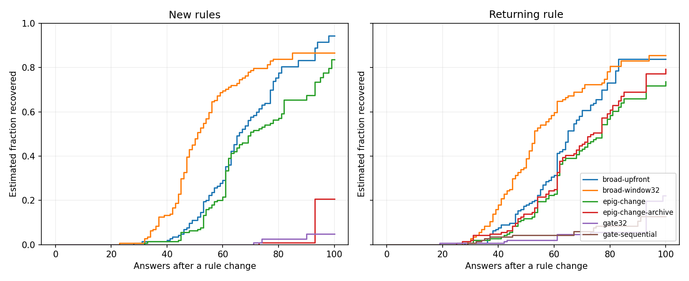
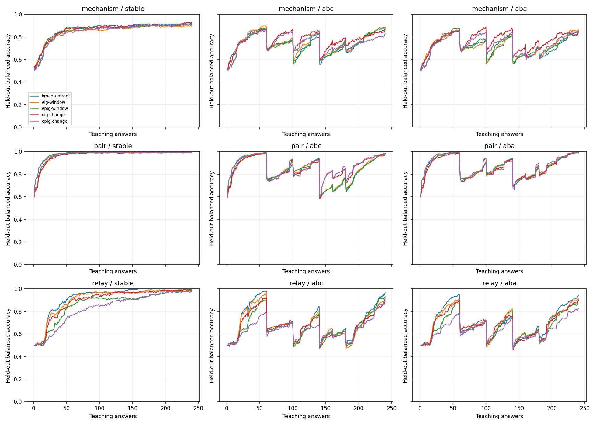
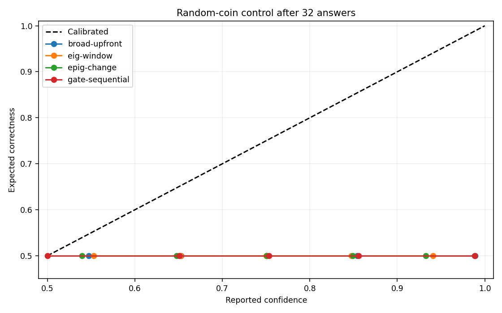
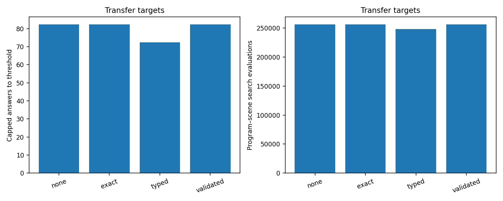

12,954 task runs; 2,990,592 newly acquired answers; 3,008,640 processed answers including validation reuse. 12,954 checkpoints verified. 0 partial blocks excluded from paired analysis.
These experiments compare probability updates, question selection, changing rules, and reusable relational templates. Every symbolic proof is conditional on its proposed program. The experiments do not establish general intelligence, unrestricted concept invention, or the benefits of embeddings.
EPIG uses only the permitted teaching-input distribution. Long evaluation paths remain outside learning and question selection. World rules and feedback noise are evaluator-owned. Candidate generation uses a fixed 10% noise ranking heuristic in every new condition; the probability updater integrates its separate noise grid. The resulting probabilities are conditional on the bounded searched bank, not an exact posterior over all programs.
The change model retains at most 32 run-length branches and records discarded mass. Stochastic-model weight cannot distinguish all random processes from missing explanations. Capped costs retain failures at their available horizon; recovery fractions must be read alongside costs. Confidence plots use expected correctness for stochastic controls.
Accuracy averages held-out balanced accuracy over the full teaching trace. The final_accuracy field in the CSV and JSON averages the final 20 answers. Success requires at least 90% accuracy for ten consecutive answers; failed attempts retain their available horizon in capped costs.

Kaplan–Meier descriptive curves. Unrecovered transitions are censored at the next change/end; phase durations vary. Censoring independence is an assumption, so read curves with observed recovery fractions and capped costs.
| Library | Repeated libraries | Candidate records | Promoted records | Targets whose final program uses a concept |
|---|---|---|---|---|
| exact | 144 | 140 | 0 | 0/288 |
| none | 144 | 0 | 0 | 0/288 |
| typed | 144 | 141 | 0 | 223/288 |
| validated | 144 | 141 | 0 | 0/288 |
Counts include repeated world/noise/seed runs. Only the validated condition has a predictive promotion gate. All conditions separated by feedback noise (CSV).
Post-hoc descriptive diagnostic added after inspecting the complete core results. It measures public teaching-graph size and distinct questions for every relay condition. Four objects is the largest permitted teaching graph, including broken chains; it is not a label of a successful three-link path. These associations do not establish why a policy generalizes better or worse. No experiment settings were changed. Per-run coverage measurements (CSV); aggregate measurements are in analysis.json.
| Regime | Learner | Four-object questions in first 32 answers | Distinct teaching pool visited in first 32 answers |
|---|---|---|---|
| aba | broad-upfront | 24.8% | 33.3% |
| aba | eig-change | 22.0% | 32.1% |
| aba | epig-change | 34.8% | 28.0% |
| abc | broad-upfront | 23.7% | 33.4% |
| abc | eig-change | 19.8% | 32.5% |
| abc | epig-change | 36.8% | 28.6% |
| stable | broad-upfront | 24.8% | 33.2% |
| stable | eig-change | 19.2% | 31.5% |
| stable | epig-change | 32.0% | 27.6% |
Research targets are assessed below on the completed sample. Passing a numerical target is not a statistical guarantee; all paired intervals and failures are retained. Transfer targets include common source and validation acquisition costs, including shadow search. Reliability guardrails allow at most 0.02 accuracy loss, 0.01 Brier increase, and 0.02 nats log-loss increase.
| Target | Condition | Met in this sample | Measurements |
|---|---|---|---|
| recovery | aba | False | {"relative_cost_reduction": -0.08244507287361318, "stable_accuracy_guardrail": false} |
| recovery | abc | False | {"relative_cost_reduction": -0.05008925758689491, "stable_accuracy_guardrail": false} |
| random-calibration | broad-upfront | False | {"brier": 0.4598930354604899, "confident_coverage": 0.8298068576388888} |
| random-calibration | broad-window32 | False | {"brier": 0.4414625991149358, "confident_coverage": 0.7439236111111112} |
| random-calibration | eig-change | False | {"brier": 0.32302848752344876, "confident_coverage": 0.11748589409722222} |
| random-calibration | eig-window | False | {"brier": 0.32259911075583375, "confident_coverage": 0.10888671875000001} |
| random-calibration | epig-change | False | {"brier": 0.30110264330111924, "confident_coverage": 0.06674846420940171} |
| random-calibration | epig-window | False | {"brier": 0.3114212448458502, "confident_coverage": 0.09571981837606838} |
| random-calibration | gate-sequential | True | {"brier": 0.25619467021984016, "confident_coverage": 0.024595602964743595} |
| random-calibration | gate32 | False | {"brier": 0.2835919412043936, "confident_coverage": 0.13372646233974358} |
| random-calibration | gate8 | True | {"brier": 0.2637441807069478, "confident_coverage": 0.054850260416666664} |
| random-calibration | random-window | False | {"brier": 0.29860231303425816, "confident_coverage": 0.062257946047008544} |
| validated-transfer | pair | False | {"reliability_guardrail": true, "total_label_reduction": 0.0, "total_search_reduction": 0.0} |
| validated-transfer | relay | False | {"reliability_guardrail": true, "total_label_reduction": 0.0, "total_search_reduction": 0.0} |
| Role | World | Regime | Variant | Independent worlds | Accuracy | Brier | Initial cost | Recovery cost | Recovered | CPU s/task | Budget stops |
|---|---|---|---|---|---|---|---|---|---|---|---|
| primary | coin | diagnostic | broad-upfront | 8 | 0.500 | 0.454 | 240.000 | — | 0/0 | 2.300 | 0 |
| primary | coin | diagnostic | broad-window32 | 8 | 0.500 | 0.438 | 240.000 | — | 0/0 | 2.407 | 0 |
| primary | coin | diagnostic | eig-change | 8 | 0.500 | 0.326 | 240.000 | — | 0/0 | 6.325 | 0 |
| primary | coin | diagnostic | eig-window | 8 | 0.500 | 0.327 | 240.000 | — | 0/0 | 3.473 | 0 |
| primary | coin | diagnostic | epig-change | 8 | 0.500 | 0.304 | 240.000 | — | 0/0 | 6.101 | 0 |
| primary | coin | diagnostic | epig-window | 8 | 0.500 | 0.314 | 240.000 | — | 0/0 | 3.461 | 0 |
| primary | coin | diagnostic | gate-sequential | 8 | 0.500 | 0.278 | 240.000 | — | 0/0 | 0.932 | 0 |
| primary | coin | diagnostic | gate32 | 8 | 0.500 | 0.302 | 240.000 | — | 0/0 | 1.088 | 0 |
| primary | coin | diagnostic | gate8 | 8 | 0.500 | 0.285 | 240.000 | — | 0/0 | 1.405 | 0 |
| primary | coin | diagnostic | random-window | 8 | 0.500 | 0.301 | 240.000 | — | 0/0 | 2.982 | 0 |
| primary | distraction | diagnostic | broad-upfront | 8 | 0.689 | 0.282 | 240.000 | — | 0/0 | 2.356 | 0 |
| primary | distraction | diagnostic | broad-window32 | 8 | 0.685 | 0.276 | 240.000 | — | 0/0 | 2.233 | 0 |
| primary | distraction | diagnostic | eig-change | 8 | 0.710 | 0.235 | 240.000 | — | 0/0 | 5.905 | 0 |
| primary | distraction | diagnostic | eig-window | 8 | 0.698 | 0.235 | 240.000 | — | 0/0 | 3.330 | 0 |
| primary | distraction | diagnostic | epig-change | 8 | 0.682 | 0.246 | 240.000 | — | 0/0 | 5.628 | 0 |
| primary | distraction | diagnostic | epig-window | 8 | 0.666 | 0.248 | 240.000 | — | 0/0 | 3.111 | 0 |
| primary | distraction | diagnostic | random-window | 8 | 0.673 | 0.247 | 240.000 | — | 0/0 | 2.899 | 0 |
| primary | mechanism | aba | broad-upfront | 8 | 0.713 | 0.235 | 49.083 | 73.312 | 67/144 | 2.362 | 0 |
| primary | mechanism | aba | broad-window32 | 8 | 0.765 | 0.176 | 51.125 | 61.604 | 92/144 | 2.399 | 0 |
| primary | mechanism | aba | eig-change | 8 | 0.767 | 0.157 | 49.181 | 66.750 | 68/144 | 6.269 | 0 |
| primary | mechanism | aba | eig-window | 8 | 0.722 | 0.207 | 50.181 | 71.924 | 74/144 | 3.539 | 0 |
| primary | mechanism | aba | epig-change | 8 | 0.736 | 0.171 | 53.750 | 70.722 | 67/144 | 6.096 | 0 |
| primary | mechanism | aba | epig-change-archive | 8 | 0.737 | 0.170 | 53.750 | 70.035 | 66/144 | 5.897 | 0 |
| primary | mechanism | aba | epig-window | 8 | 0.723 | 0.207 | 51.208 | 71.306 | 72/144 | 3.418 | 0 |
| primary | mechanism | aba | random-window | 8 | 0.670 | 0.224 | 61.042 | 76.104 | 57/144 | 3.131 | 0 |
| primary | mechanism | abc | broad-upfront | 8 | 0.737 | 0.231 | 47.486 | 70.083 | 71/144 | 2.200 | 0 |
| primary | mechanism | abc | broad-window32 | 8 | 0.789 | 0.173 | 48.681 | 57.694 | 92/144 | 2.145 | 0 |
| primary | mechanism | abc | eig-change | 8 | 0.775 | 0.166 | 49.042 | 65.160 | 70/144 | 5.728 | 0 |
| primary | mechanism | abc | eig-window | 8 | 0.749 | 0.210 | 47.208 | 69.569 | 76/144 | 3.215 | 0 |
| primary | mechanism | abc | epig-change | 8 | 0.748 | 0.186 | 51.278 | 67.861 | 62/144 | 5.675 | 0 |
| primary | mechanism | abc | epig-window | 8 | 0.738 | 0.207 | 50.458 | 68.861 | 81/144 | 3.058 | 0 |
| primary | mechanism | abc | random-window | 8 | 0.697 | 0.223 | 60.333 | 70.528 | 78/144 | 2.855 | 0 |
| primary | mechanism | stable | broad-upfront | 8 | 0.871 | 0.073 | 91.514 | — | 0/0 | 2.130 | 0 |
| primary | mechanism | stable | broad-window32 | 8 | 0.851 | 0.086 | 94.847 | — | 0/0 | 2.188 | 0 |
| primary | mechanism | stable | eig-change | 8 | 0.863 | 0.071 | 95.583 | — | 0/0 | 5.994 | 0 |
| primary | mechanism | stable | eig-window | 8 | 0.850 | 0.085 | 105.861 | — | 0/0 | 3.052 | 0 |
| primary | mechanism | stable | epig-change | 8 | 0.850 | 0.082 | 110.639 | — | 0/0 | 5.724 | 0 |
| primary | mechanism | stable | epig-window | 8 | 0.856 | 0.078 | 102.333 | — | 0/0 | 3.095 | 0 |
| primary | mechanism | stable | random-window | 8 | 0.798 | 0.110 | 127.653 | — | 0/0 | 2.950 | 0 |
| primary | noise-shift | diagnostic | broad-upfront | 8 | 0.951 | 0.019 | 34.889 | 10.000 | 144/144 | 2.137 | 0 |
| primary | noise-shift | diagnostic | broad-window32 | 8 | 0.909 | 0.040 | 34.958 | 13.868 | 144/144 | 2.144 | 0 |
| primary | noise-shift | diagnostic | eig-change | 8 | 0.909 | 0.033 | 38.750 | 14.271 | 141/144 | 3.418 | 0 |
| primary | noise-shift | diagnostic | eig-window | 8 | 0.943 | 0.023 | 35.750 | 10.778 | 144/144 | 2.566 | 0 |
| primary | noise-shift | diagnostic | epig-change | 8 | 0.847 | 0.054 | 52.417 | 21.271 | 131/144 | 3.523 | 0 |
| primary | noise-shift | diagnostic | epig-window | 8 | 0.902 | 0.037 | 45.806 | 14.299 | 140/144 | 2.667 | 0 |
| primary | noise-shift | diagnostic | random-window | 8 | 0.807 | 0.064 | 46.778 | 25.368 | 130/144 | 2.429 | 0 |
| primary | pair | aba | broad-upfront | 8 | 0.865 | 0.095 | 25.000 | 51.363 | 414/432 | 2.175 | 0 |
| primary | pair | aba | broad-window32 | 8 | 0.895 | 0.068 | 25.449 | 37.995 | 421/432 | 2.142 | 0 |
| primary | pair | aba | eig-change | 8 | 0.862 | 0.075 | 26.843 | 48.491 | 411/432 | 3.451 | 0 |
| primary | pair | aba | eig-window | 8 | 0.865 | 0.089 | 25.838 | 50.699 | 413/432 | 2.580 | 0 |
| primary | pair | aba | epig-change | 8 | 0.869 | 0.074 | 23.352 | 47.493 | 422/432 | 3.364 | 0 |
| primary | pair | aba | epig-change-archive | 8 | 0.875 | 0.071 | 23.352 | 45.377 | 422/432 | 3.294 | 0 |
| primary | pair | aba | epig-window | 8 | 0.871 | 0.088 | 23.287 | 50.194 | 423/432 | 2.600 | 0 |
| primary | pair | aba | random-window | 8 | 0.834 | 0.105 | 35.880 | 53.852 | 383/432 | 2.290 | 0 |
| primary | pair | abc | broad-upfront | 8 | 0.833 | 0.112 | 26.116 | 55.653 | 395/432 | 2.077 | 0 |
| primary | pair | abc | broad-window32 | 8 | 0.876 | 0.077 | 26.681 | 40.058 | 413/432 | 2.014 | 0 |
| primary | pair | abc | eig-change | 8 | 0.855 | 0.076 | 28.153 | 48.148 | 400/432 | 3.325 | 0 |
| primary | pair | abc | eig-window | 8 | 0.835 | 0.103 | 27.120 | 54.532 | 396/432 | 2.495 | 0 |
| primary | pair | abc | epig-change | 8 | 0.865 | 0.072 | 25.310 | 47.148 | 405/432 | 3.295 | 0 |
| primary | pair | abc | epig-window | 8 | 0.840 | 0.101 | 24.894 | 53.889 | 401/432 | 2.460 | 0 |
| primary | pair | abc | random-window | 8 | 0.795 | 0.123 | 37.718 | 57.845 | 358/432 | 2.229 | 0 |
| primary | pair | stable | broad-upfront | 8 | 0.970 | 0.020 | 27.440 | — | 0/0 | 2.155 | 0 |
| primary | pair | stable | broad-window32 | 8 | 0.956 | 0.028 | 28.264 | — | 0/0 | 2.164 | 0 |
| primary | pair | stable | eig-change | 8 | 0.969 | 0.019 | 28.435 | — | 0/0 | 3.358 | 0 |
| primary | pair | stable | eig-window | 8 | 0.971 | 0.019 | 27.097 | — | 0/0 | 2.646 | 0 |
| primary | pair | stable | epig-change | 8 | 0.977 | 0.016 | 25.009 | — | 0/0 | 3.364 | 0 |
| primary | pair | stable | epig-window | 8 | 0.979 | 0.016 | 24.000 | — | 0/0 | 2.603 | 0 |
| primary | pair | stable | random-window | 8 | 0.936 | 0.039 | 42.759 | — | 0/0 | 2.350 | 0 |
| primary | relay | aba | broad-upfront | 8 | 0.698 | 0.133 | 41.042 | 63.847 | 97/144 | 2.119 | 0 |
| primary | relay | aba | broad-window32 | 8 | 0.729 | 0.119 | 43.042 | 57.312 | 113/144 | 2.237 | 0 |
| primary | relay | aba | eig-change | 8 | 0.684 | 0.107 | 45.569 | 66.972 | 97/144 | 3.544 | 0 |
| primary | relay | aba | eig-window | 8 | 0.689 | 0.123 | 44.083 | 65.979 | 107/144 | 2.672 | 0 |
| primary | relay | aba | epig-change | 8 | 0.638 | 0.123 | 56.250 | 69.111 | 83/144 | 3.437 | 0 |
| primary | relay | aba | epig-change-archive | 8 | 0.646 | 0.120 | 56.250 | 67.667 | 87/144 | 3.343 | 0 |
| primary | relay | aba | epig-window | 8 | 0.668 | 0.127 | 49.375 | 66.326 | 93/144 | 2.585 | 0 |
| primary | relay | aba | gate-sequential | 8 | 0.516 | 0.222 | 74.000 | 80.069 | 13/144 | 1.109 | 0 |
| primary | relay | aba | gate32 | 8 | 0.514 | 0.203 | 74.625 | 80.257 | 14/144 | 1.006 | 0 |
| primary | relay | aba | gate8 | 8 | 0.501 | 0.218 | 75.000 | 82.500 | 0/144 | 1.500 | 0 |
| primary | relay | aba | random-window | 8 | 0.649 | 0.127 | 54.653 | 66.375 | 86/144 | 2.301 | 0 |
| primary | relay | abc | broad-upfront | 8 | 0.697 | 0.133 | 39.806 | 66.132 | 111/144 | 2.081 | 0 |
| primary | relay | abc | broad-window32 | 8 | 0.750 | 0.111 | 40.625 | 55.118 | 118/144 | 2.046 | 0 |
| primary | relay | abc | eig-change | 8 | 0.677 | 0.107 | 44.806 | 69.264 | 95/144 | 3.422 | 0 |
| primary | relay | abc | eig-window | 8 | 0.682 | 0.122 | 41.653 | 68.271 | 105/144 | 2.525 | 0 |
| primary | relay | abc | epig-change | 8 | 0.643 | 0.117 | 55.250 | 69.444 | 89/144 | 3.459 | 0 |
| primary | relay | abc | epig-window | 8 | 0.670 | 0.121 | 47.611 | 68.167 | 108/144 | 2.562 | 0 |
| primary | relay | abc | gate-sequential | 8 | 0.507 | 0.226 | 73.806 | 82.146 | 4/144 | 1.098 | 0 |
| primary | relay | abc | gate32 | 8 | 0.509 | 0.207 | 74.250 | 82.014 | 10/144 | 1.037 | 0 |
| primary | relay | abc | gate8 | 8 | 0.501 | 0.220 | 75.000 | 82.500 | 0/144 | 1.433 | 0 |
| primary | relay | abc | random-window | 8 | 0.640 | 0.130 | 53.569 | 68.424 | 82/144 | 2.267 | 0 |
| primary | relay | stable | broad-upfront | 8 | 0.924 | 0.033 | 48.625 | — | 0/0 | 2.355 | 0 |
| primary | relay | stable | broad-window32 | 8 | 0.885 | 0.053 | 53.750 | — | 0/0 | 2.161 | 0 |
| primary | relay | stable | eig-change | 8 | 0.898 | 0.037 | 55.681 | — | 0/0 | 3.485 | 0 |
| primary | relay | stable | eig-window | 8 | 0.912 | 0.036 | 50.694 | — | 0/0 | 2.662 | 0 |
| primary | relay | stable | epig-change | 8 | 0.832 | 0.060 | 91.444 | — | 0/0 | 3.636 | 0 |
| primary | relay | stable | epig-window | 8 | 0.865 | 0.050 | 69.111 | — | 0/0 | 2.692 | 0 |
| primary | relay | stable | gate-sequential | 8 | 0.610 | 0.177 | 185.653 | — | 0/0 | 1.129 | 0 |
| primary | relay | stable | gate32 | 8 | 0.621 | 0.151 | 187.403 | — | 0/0 | 1.059 | 0 |
| primary | relay | stable | gate8 | 8 | 0.502 | 0.216 | 240.000 | — | 0/0 | 1.475 | 0 |
| primary | relay | stable | random-window | 8 | 0.806 | 0.067 | 86.569 | — | 0/0 | 2.412 | 0 |
| primary | unsupported | diagnostic | broad-upfront | 8 | 0.409 | 0.549 | 240.000 | — | 0/0 | 2.744 | 0 |
| primary | unsupported | diagnostic | broad-window32 | 8 | 0.404 | 0.542 | 240.000 | — | 0/0 | 2.728 | 0 |
| primary | unsupported | diagnostic | eig-change | 8 | 0.418 | 0.468 | 240.000 | — | 0/0 | 6.683 | 0 |
| primary | unsupported | diagnostic | eig-window | 8 | 0.412 | 0.493 | 240.000 | — | 0/0 | 3.925 | 0 |
| primary | unsupported | diagnostic | epig-change | 8 | 0.438 | 0.444 | 240.000 | — | 0/0 | 6.861 | 0 |
| primary | unsupported | diagnostic | epig-window | 8 | 0.417 | 0.487 | 240.000 | — | 0/0 | 3.864 | 0 |
| primary | unsupported | diagnostic | random-window | 8 | 0.405 | 0.446 | 240.000 | — | 0/0 | 3.405 | 0 |
| target | pair | transfer | library-exact | 16 | 0.963 | 0.024 | 23.181 | — | 0/0 | 4.029 | 0 |
| target | pair | transfer | library-none | 16 | 0.963 | 0.024 | 23.181 | — | 0/0 | 4.177 | 0 |
| target | pair | transfer | library-typed | 16 | 0.967 | 0.025 | 16.688 | — | 0/0 | 5.561 | 0 |
| target | pair | transfer | library-validated | 16 | 0.963 | 0.024 | 23.181 | — | 0/0 | 4.136 | 0 |
| target | relay | transfer | library-exact | 16 | 0.715 | 0.214 | 141.368 | — | 0/0 | 4.222 | 0 |
| target | relay | transfer | library-none | 16 | 0.715 | 0.214 | 141.368 | — | 0/0 | 4.320 | 0 |
| target | relay | transfer | library-typed | 16 | 0.748 | 0.184 | 128.007 | — | 0/0 | 6.079 | 0 |
| target | relay | transfer | library-validated | 16 | 0.715 | 0.214 | 141.368 | — | 0/0 | 4.377 | 0 |
Differences are candidate minus baseline. Lower error, cost, and CPU are better. Intervals are descriptive cluster-bootstrap intervals, with 5,000 resamples; fewer than eight independent worlds is exploratory. Multiple reported contrasts are not a familywise significance claim.
| World | Regime | Candidate / baseline | Metric | Difference | 95% interval | Worlds |
|---|---|---|---|---|---|---|
| coin | diagnostic | epig-window / eig-window | accuracy | 0.000 | [0.000, 0.000] | 8 |
| coin | diagnostic | epig-window / eig-window | brier | -0.012 | [-0.017, -0.008] | 8 |
| coin | diagnostic | epig-window / eig-window | initial_cost | 0.000 | [0.000, 0.000] | 8 |
| coin | diagnostic | epig-change / eig-change | accuracy | 0.000 | [0.000, 0.000] | 8 |
| coin | diagnostic | epig-change / eig-change | brier | -0.022 | [-0.027, -0.017] | 8 |
| coin | diagnostic | epig-change / eig-change | initial_cost | 0.000 | [0.000, 0.000] | 8 |
| coin | diagnostic | eig-change / eig-window | accuracy | 0.000 | [0.000, 0.000] | 8 |
| coin | diagnostic | eig-change / eig-window | brier | -0.001 | [-0.009, 0.008] | 8 |
| coin | diagnostic | eig-change / eig-window | initial_cost | 0.000 | [0.000, 0.000] | 8 |
| coin | diagnostic | epig-change / epig-window | accuracy | 0.000 | [0.000, 0.000] | 8 |
| coin | diagnostic | epig-change / epig-window | brier | -0.010 | [-0.016, -0.003] | 8 |
| coin | diagnostic | epig-change / epig-window | initial_cost | 0.000 | [0.000, 0.000] | 8 |
| coin | diagnostic | epig-change / broad-upfront | accuracy | 0.000 | [0.000, 0.000] | 8 |
| coin | diagnostic | epig-change / broad-upfront | brier | -0.149 | [-0.156, -0.143] | 8 |
| coin | diagnostic | epig-change / broad-upfront | initial_cost | 0.000 | [0.000, 0.000] | 8 |
| coin | diagnostic | epig-change / broad-window32 | accuracy | 0.000 | [0.000, 0.000] | 8 |
| coin | diagnostic | epig-change / broad-window32 | brier | -0.133 | [-0.141, -0.126] | 8 |
| coin | diagnostic | epig-change / broad-window32 | initial_cost | 0.000 | [0.000, 0.000] | 8 |
| coin | diagnostic | eig-window / random-window | accuracy | 0.000 | [0.000, 0.000] | 8 |
| coin | diagnostic | eig-window / random-window | brier | 0.026 | [0.021, 0.029] | 8 |
| coin | diagnostic | eig-window / random-window | initial_cost | 0.000 | [0.000, 0.000] | 8 |
| coin | diagnostic | gate8 / gate32 | accuracy | 0.000 | [0.000, 0.000] | 8 |
| coin | diagnostic | gate8 / gate32 | brier | -0.017 | [-0.018, -0.016] | 8 |
| coin | diagnostic | gate8 / gate32 | initial_cost | 0.000 | [0.000, 0.000] | 8 |
| coin | diagnostic | gate-sequential / gate32 | accuracy | 0.000 | [0.000, 0.000] | 8 |
| coin | diagnostic | gate-sequential / gate32 | brier | -0.024 | [-0.026, -0.021] | 8 |
| coin | diagnostic | gate-sequential / gate32 | initial_cost | 0.000 | [0.000, 0.000] | 8 |
| distraction | diagnostic | epig-window / eig-window | accuracy | -0.032 | [-0.055, -0.010] | 8 |
| distraction | diagnostic | epig-window / eig-window | brier | 0.013 | [0.004, 0.025] | 8 |
| distraction | diagnostic | epig-window / eig-window | initial_cost | 0.000 | [0.000, 0.000] | 8 |
| distraction | diagnostic | epig-change / eig-change | accuracy | -0.028 | [-0.073, 0.003] | 8 |
| distraction | diagnostic | epig-change / eig-change | brier | 0.011 | [-0.005, 0.034] | 8 |
| distraction | diagnostic | epig-change / eig-change | initial_cost | 0.000 | [0.000, 0.000] | 8 |
| distraction | diagnostic | eig-change / eig-window | accuracy | 0.012 | [-0.008, 0.034] | 8 |
| distraction | diagnostic | eig-change / eig-window | brier | 0.000 | [-0.013, 0.011] | 8 |
| distraction | diagnostic | eig-change / eig-window | initial_cost | 0.000 | [0.000, 0.000] | 8 |
| distraction | diagnostic | epig-change / epig-window | accuracy | 0.016 | [0.002, 0.032] | 8 |
| distraction | diagnostic | epig-change / epig-window | brier | -0.001 | [-0.007, 0.005] | 8 |
| distraction | diagnostic | epig-change / epig-window | initial_cost | 0.000 | [0.000, 0.000] | 8 |
| distraction | diagnostic | epig-change / broad-upfront | accuracy | -0.008 | [-0.029, 0.008] | 8 |
| distraction | diagnostic | epig-change / broad-upfront | brier | -0.036 | [-0.044, -0.028] | 8 |
| distraction | diagnostic | epig-change / broad-upfront | initial_cost | 0.000 | [0.000, 0.000] | 8 |
| distraction | diagnostic | epig-change / broad-window32 | accuracy | -0.003 | [-0.039, 0.020] | 8 |
| distraction | diagnostic | epig-change / broad-window32 | brier | -0.030 | [-0.045, -0.010] | 8 |
| distraction | diagnostic | epig-change / broad-window32 | initial_cost | 0.000 | [0.000, 0.000] | 8 |
| distraction | diagnostic | eig-window / random-window | accuracy | 0.025 | [0.006, 0.052] | 8 |
| distraction | diagnostic | eig-window / random-window | brier | -0.013 | [-0.027, -0.003] | 8 |
| distraction | diagnostic | eig-window / random-window | initial_cost | 0.000 | [0.000, 0.000] | 8 |
| mechanism | aba | epig-window / eig-window | accuracy | 0.001 | [-0.013, 0.015] | 8 |
| mechanism | aba | epig-window / eig-window | brier | -0.001 | [-0.010, 0.008] | 8 |
| mechanism | aba | epig-window / eig-window | initial_cost | 1.028 | [-1.903, 3.903] | 8 |
| mechanism | aba | epig-window / eig-window | recovery_cost | -0.618 | [-2.701, 1.910] | 8 |
| mechanism | aba | epig-change / eig-change | accuracy | -0.031 | [-0.047, -0.017] | 8 |
| mechanism | aba | epig-change / eig-change | brier | 0.015 | [0.006, 0.027] | 8 |
| mechanism | aba | epig-change / eig-change | initial_cost | 4.569 | [0.541, 8.750] | 8 |
| mechanism | aba | epig-change / eig-change | recovery_cost | 3.972 | [0.944, 7.743] | 8 |
| mechanism | aba | eig-change / eig-window | accuracy | 0.045 | [0.013, 0.081] | 8 |
| mechanism | aba | eig-change / eig-window | brier | -0.051 | [-0.083, -0.021] | 8 |
| mechanism | aba | eig-change / eig-window | initial_cost | -1.000 | [-4.153, 1.389] | 8 |
| mechanism | aba | eig-change / eig-window | recovery_cost | -5.174 | [-11.646, 1.084] | 8 |
| mechanism | aba | epig-change / epig-window | accuracy | 0.013 | [-0.028, 0.057] | 8 |
| mechanism | aba | epig-change / epig-window | brier | -0.035 | [-0.074, -0.000] | 8 |
| mechanism | aba | epig-change / epig-window | initial_cost | 2.542 | [-1.208, 6.778] | 8 |
| mechanism | aba | epig-change / epig-window | recovery_cost | -0.583 | [-5.007, 3.313] | 8 |
| mechanism | aba | epig-change / broad-upfront | accuracy | 0.022 | [-0.007, 0.054] | 8 |
| mechanism | aba | epig-change / broad-upfront | brier | -0.064 | [-0.097, -0.031] | 8 |
| mechanism | aba | epig-change / broad-upfront | initial_cost | 4.667 | [-1.778, 11.223] | 8 |
| mechanism | aba | epig-change / broad-upfront | recovery_cost | -2.590 | [-6.083, 0.299] | 8 |
| mechanism | aba | epig-change / broad-window32 | accuracy | -0.029 | [-0.047, -0.014] | 8 |
| mechanism | aba | epig-change / broad-window32 | brier | -0.004 | [-0.022, 0.014] | 8 |
| mechanism | aba | epig-change / broad-window32 | initial_cost | 2.625 | [-2.848, 7.708] | 8 |
| mechanism | aba | epig-change / broad-window32 | recovery_cost | 9.118 | [4.931, 13.646] | 8 |
| mechanism | aba | eig-window / random-window | accuracy | 0.052 | [0.029, 0.077] | 8 |
| mechanism | aba | eig-window / random-window | brier | -0.016 | [-0.028, -0.005] | 8 |
| mechanism | aba | eig-window / random-window | initial_cost | -10.861 | [-22.473, -3.361] | 8 |
| mechanism | aba | eig-window / random-window | recovery_cost | -4.181 | [-7.215, -1.563] | 8 |
| mechanism | aba | epig-change-archive / epig-change | accuracy | 0.001 | [-0.003, 0.004] | 8 |
| mechanism | aba | epig-change-archive / epig-change | brier | -0.001 | [-0.003, 0.001] | 8 |
| mechanism | aba | epig-change-archive / epig-change | initial_cost | 0.000 | [0.000, 0.000] | 8 |
| mechanism | aba | epig-change-archive / epig-change | recovery_cost | -0.688 | [-1.938, 0.306] | 8 |
| mechanism | abc | epig-window / eig-window | accuracy | -0.011 | [-0.022, 0.001] | 8 |
| mechanism | abc | epig-window / eig-window | brier | -0.003 | [-0.010, 0.004] | 8 |
| mechanism | abc | epig-window / eig-window | initial_cost | 3.250 | [-1.306, 7.167] | 8 |
| mechanism | abc | epig-window / eig-window | recovery_cost | -0.708 | [-2.730, 1.209] | 8 |
| mechanism | abc | epig-change / eig-change | accuracy | -0.027 | [-0.040, -0.013] | 8 |
| mechanism | abc | epig-change / eig-change | brier | 0.020 | [0.007, 0.032] | 8 |
| mechanism | abc | epig-change / eig-change | initial_cost | 2.236 | [-2.875, 7.792] | 8 |
| mechanism | abc | epig-change / eig-change | recovery_cost | 2.701 | [-0.285, 5.792] | 8 |
| mechanism | abc | eig-change / eig-window | accuracy | 0.026 | [0.001, 0.058] | 8 |
| mechanism | abc | eig-change / eig-window | brier | -0.044 | [-0.069, -0.022] | 8 |
| mechanism | abc | eig-change / eig-window | initial_cost | 1.833 | [-1.069, 5.097] | 8 |
| mechanism | abc | eig-change / eig-window | recovery_cost | -4.410 | [-9.723, -0.368] | 8 |
| mechanism | abc | epig-change / epig-window | accuracy | 0.010 | [-0.016, 0.041] | 8 |
| mechanism | abc | epig-change / epig-window | brier | -0.021 | [-0.044, 0.003] | 8 |
| mechanism | abc | epig-change / epig-window | initial_cost | 0.819 | [-3.875, 6.709] | 8 |
| mechanism | abc | epig-change / epig-window | recovery_cost | -1.000 | [-5.035, 2.542] | 8 |
| mechanism | abc | epig-change / broad-upfront | accuracy | 0.011 | [-0.019, 0.038] | 8 |
| mechanism | abc | epig-change / broad-upfront | brier | -0.045 | [-0.067, -0.019] | 8 |
| mechanism | abc | epig-change / broad-upfront | initial_cost | 3.792 | [-3.875, 11.528] | 8 |
| mechanism | abc | epig-change / broad-upfront | recovery_cost | -2.222 | [-6.549, 1.451] | 8 |
| mechanism | abc | epig-change / broad-window32 | accuracy | -0.041 | [-0.053, -0.028] | 8 |
| mechanism | abc | epig-change / broad-window32 | brier | 0.012 | [-0.005, 0.027] | 8 |
| mechanism | abc | epig-change / broad-window32 | initial_cost | 2.597 | [-4.597, 9.361] | 8 |
| mechanism | abc | epig-change / broad-window32 | recovery_cost | 10.167 | [6.521, 13.903] | 8 |
| mechanism | abc | eig-window / random-window | accuracy | 0.052 | [0.026, 0.076] | 8 |
| mechanism | abc | eig-window / random-window | brier | -0.013 | [-0.025, 0.002] | 8 |
| mechanism | abc | eig-window / random-window | initial_cost | -13.125 | [-25.335, -2.791] | 8 |
| mechanism | abc | eig-window / random-window | recovery_cost | -0.958 | [-5.153, 3.354] | 8 |
| mechanism | stable | epig-window / eig-window | accuracy | 0.006 | [-0.012, 0.029] | 8 |
| mechanism | stable | epig-window / eig-window | brier | -0.007 | [-0.026, 0.007] | 8 |
| mechanism | stable | epig-window / eig-window | initial_cost | -3.528 | [-22.514, 11.833] | 8 |
| mechanism | stable | epig-change / eig-change | accuracy | -0.013 | [-0.037, 0.013] | 8 |
| mechanism | stable | epig-change / eig-change | brier | 0.010 | [-0.010, 0.027] | 8 |
| mechanism | stable | epig-change / eig-change | initial_cost | 15.056 | [-9.946, 36.861] | 8 |
| mechanism | stable | eig-change / eig-window | accuracy | 0.013 | [0.000, 0.028] | 8 |
| mechanism | stable | eig-change / eig-window | brier | -0.014 | [-0.026, -0.003] | 8 |
| mechanism | stable | eig-change / eig-window | initial_cost | -10.278 | [-26.654, 0.236] | 8 |
| mechanism | stable | epig-change / epig-window | accuracy | -0.006 | [-0.016, 0.003] | 8 |
| mechanism | stable | epig-change / epig-window | brier | 0.004 | [-0.001, 0.008] | 8 |
| mechanism | stable | epig-change / epig-window | initial_cost | 8.306 | [1.847, 15.639] | 8 |
| mechanism | stable | epig-change / broad-upfront | accuracy | -0.021 | [-0.034, -0.009] | 8 |
| mechanism | stable | epig-change / broad-upfront | brier | 0.008 | [-0.000, 0.019] | 8 |
| mechanism | stable | epig-change / broad-upfront | initial_cost | 19.125 | [3.262, 36.861] | 8 |
| mechanism | stable | epig-change / broad-window32 | accuracy | -0.002 | [-0.010, 0.007] | 8 |
| mechanism | stable | epig-change / broad-window32 | brier | -0.004 | [-0.011, 0.001] | 8 |
| mechanism | stable | epig-change / broad-window32 | initial_cost | 15.792 | [1.472, 32.807] | 8 |
| mechanism | stable | eig-window / random-window | accuracy | 0.052 | [0.006, 0.113] | 8 |
| mechanism | stable | eig-window / random-window | brier | -0.025 | [-0.038, -0.008] | 8 |
| mechanism | stable | eig-window / random-window | initial_cost | -21.792 | [-52.390, 7.265] | 8 |
| noise-shift | diagnostic | epig-window / eig-window | accuracy | -0.041 | [-0.068, -0.017] | 8 |
| noise-shift | diagnostic | epig-window / eig-window | brier | 0.014 | [0.003, 0.027] | 8 |
| noise-shift | diagnostic | epig-window / eig-window | initial_cost | 10.056 | [3.042, 18.278] | 8 |
| noise-shift | diagnostic | epig-window / eig-window | recovery_cost | 3.521 | [0.472, 7.375] | 8 |
| noise-shift | diagnostic | epig-change / eig-change | accuracy | -0.062 | [-0.090, -0.035] | 8 |
| noise-shift | diagnostic | epig-change / eig-change | brier | 0.021 | [0.010, 0.032] | 8 |
| noise-shift | diagnostic | epig-change / eig-change | initial_cost | 13.667 | [8.458, 19.361] | 8 |
| noise-shift | diagnostic | epig-change / eig-change | recovery_cost | 7.000 | [2.166, 11.542] | 8 |
| noise-shift | diagnostic | eig-change / eig-window | accuracy | -0.034 | [-0.054, -0.018] | 8 |
| noise-shift | diagnostic | eig-change / eig-window | brier | 0.010 | [0.004, 0.018] | 8 |
| noise-shift | diagnostic | eig-change / eig-window | initial_cost | 3.000 | [-0.544, 7.153] | 8 |
| noise-shift | diagnostic | eig-change / eig-window | recovery_cost | 3.493 | [1.500, 5.590] | 8 |
| noise-shift | diagnostic | epig-change / epig-window | accuracy | -0.055 | [-0.087, -0.023] | 8 |
| noise-shift | diagnostic | epig-change / epig-window | brier | 0.017 | [0.005, 0.029] | 8 |
| noise-shift | diagnostic | epig-change / epig-window | initial_cost | 6.611 | [1.722, 12.597] | 8 |
| noise-shift | diagnostic | epig-change / epig-window | recovery_cost | 6.972 | [1.249, 12.562] | 8 |
| noise-shift | diagnostic | epig-change / broad-upfront | accuracy | -0.104 | [-0.130, -0.078] | 8 |
| noise-shift | diagnostic | epig-change / broad-upfront | brier | 0.034 | [0.023, 0.046] | 8 |
| noise-shift | diagnostic | epig-change / broad-upfront | initial_cost | 17.528 | [12.110, 23.390] | 8 |
| noise-shift | diagnostic | epig-change / broad-upfront | recovery_cost | 11.271 | [6.993, 15.445] | 8 |
| noise-shift | diagnostic | epig-change / broad-window32 | accuracy | -0.062 | [-0.078, -0.042] | 8 |
| noise-shift | diagnostic | epig-change / broad-window32 | brier | 0.014 | [0.005, 0.023] | 8 |
| noise-shift | diagnostic | epig-change / broad-window32 | initial_cost | 17.458 | [12.194, 22.986] | 8 |
| noise-shift | diagnostic | epig-change / broad-window32 | recovery_cost | 7.403 | [4.028, 10.583] | 8 |
| noise-shift | diagnostic | eig-window / random-window | accuracy | 0.136 | [0.097, 0.186] | 8 |
| noise-shift | diagnostic | eig-window / random-window | brier | -0.041 | [-0.057, -0.030] | 8 |
| noise-shift | diagnostic | eig-window / random-window | initial_cost | -11.028 | [-16.944, -6.875] | 8 |
| noise-shift | diagnostic | eig-window / random-window | recovery_cost | -14.590 | [-21.903, -8.249] | 8 |
| pair | aba | epig-window / eig-window | accuracy | 0.006 | [-0.001, 0.013] | 8 |
| pair | aba | epig-window / eig-window | brier | -0.001 | [-0.004, 0.002] | 8 |
| pair | aba | epig-window / eig-window | initial_cost | -2.551 | [-3.482, -1.435] | 8 |
| pair | aba | epig-window / eig-window | recovery_cost | -0.505 | [-1.912, 1.111] | 8 |
| pair | aba | epig-change / eig-change | accuracy | 0.007 | [0.004, 0.011] | 8 |
| pair | aba | epig-change / eig-change | brier | -0.001 | [-0.003, 0.001] | 8 |
| pair | aba | epig-change / eig-change | initial_cost | -3.491 | [-4.343, -2.481] | 8 |
| pair | aba | epig-change / eig-change | recovery_cost | -0.998 | [-2.507, 0.428] | 8 |
| pair | aba | eig-change / eig-window | accuracy | -0.003 | [-0.009, 0.003] | 8 |
| pair | aba | eig-change / eig-window | brier | -0.014 | [-0.017, -0.010] | 8 |
| pair | aba | eig-change / eig-window | initial_cost | 1.005 | [0.162, 1.875] | 8 |
| pair | aba | eig-change / eig-window | recovery_cost | -2.208 | [-4.141, -0.042] | 8 |
| pair | aba | epig-change / epig-window | accuracy | -0.002 | [-0.009, 0.006] | 8 |
| pair | aba | epig-change / epig-window | brier | -0.013 | [-0.017, -0.010] | 8 |
| pair | aba | epig-change / epig-window | initial_cost | 0.065 | [-0.505, 0.606] | 8 |
| pair | aba | epig-change / epig-window | recovery_cost | -2.701 | [-4.243, -1.088] | 8 |
| pair | aba | epig-change / broad-upfront | accuracy | 0.004 | [-0.002, 0.010] | 8 |
| pair | aba | epig-change / broad-upfront | brier | -0.020 | [-0.024, -0.017] | 8 |
| pair | aba | epig-change / broad-upfront | initial_cost | -1.648 | [-2.320, -0.977] | 8 |
| pair | aba | epig-change / broad-upfront | recovery_cost | -3.870 | [-5.769, -2.363] | 8 |
| pair | aba | epig-change / broad-window32 | accuracy | -0.026 | [-0.032, -0.021] | 8 |
| pair | aba | epig-change / broad-window32 | brier | 0.007 | [0.005, 0.009] | 8 |
| pair | aba | epig-change / broad-window32 | initial_cost | -2.097 | [-3.079, -1.181] | 8 |
| pair | aba | epig-change / broad-window32 | recovery_cost | 9.498 | [8.227, 10.866] | 8 |
| pair | aba | eig-window / random-window | accuracy | 0.032 | [0.026, 0.037] | 8 |
| pair | aba | eig-window / random-window | brier | -0.017 | [-0.020, -0.014] | 8 |
| pair | aba | eig-window / random-window | initial_cost | -10.042 | [-12.445, -7.532] | 8 |
| pair | aba | eig-window / random-window | recovery_cost | -3.153 | [-4.641, -1.574] | 8 |
| pair | aba | epig-change-archive / epig-change | accuracy | 0.006 | [0.004, 0.008] | 8 |
| pair | aba | epig-change-archive / epig-change | brier | -0.004 | [-0.005, -0.002] | 8 |
| pair | aba | epig-change-archive / epig-change | initial_cost | 0.000 | [0.000, 0.000] | 8 |
| pair | aba | epig-change-archive / epig-change | recovery_cost | -2.116 | [-2.780, -1.442] | 8 |
| pair | abc | epig-window / eig-window | accuracy | 0.005 | [0.001, 0.008] | 8 |
| pair | abc | epig-window / eig-window | brier | -0.002 | [-0.004, 0.001] | 8 |
| pair | abc | epig-window / eig-window | initial_cost | -2.227 | [-2.870, -1.639] | 8 |
| pair | abc | epig-window / eig-window | recovery_cost | -0.644 | [-2.093, 0.644] | 8 |
| pair | abc | epig-change / eig-change | accuracy | 0.011 | [0.005, 0.015] | 8 |
| pair | abc | epig-change / eig-change | brier | -0.004 | [-0.006, -0.002] | 8 |
| pair | abc | epig-change / eig-change | initial_cost | -2.843 | [-4.153, -1.398] | 8 |
| pair | abc | epig-change / eig-change | recovery_cost | -1.000 | [-1.523, -0.266] | 8 |
| pair | abc | eig-change / eig-window | accuracy | 0.020 | [0.011, 0.029] | 8 |
| pair | abc | eig-change / eig-window | brier | -0.027 | [-0.031, -0.022] | 8 |
| pair | abc | eig-change / eig-window | initial_cost | 1.032 | [-0.745, 2.148] | 8 |
| pair | abc | eig-change / eig-window | recovery_cost | -6.384 | [-7.729, -4.905] | 8 |
| pair | abc | epig-change / epig-window | accuracy | 0.026 | [0.021, 0.030] | 8 |
| pair | abc | epig-change / epig-window | brier | -0.029 | [-0.033, -0.024] | 8 |
| pair | abc | epig-change / epig-window | initial_cost | 0.417 | [-0.477, 1.157] | 8 |
| pair | abc | epig-change / epig-window | recovery_cost | -6.741 | [-8.178, -5.243] | 8 |
| pair | abc | epig-change / broad-upfront | accuracy | 0.033 | [0.028, 0.038] | 8 |
| pair | abc | epig-change / broad-upfront | brier | -0.040 | [-0.044, -0.034] | 8 |
| pair | abc | epig-change / broad-upfront | initial_cost | -0.806 | [-1.806, 0.421] | 8 |
| pair | abc | epig-change / broad-upfront | recovery_cost | -8.505 | [-10.197, -6.998] | 8 |
| pair | abc | epig-change / broad-window32 | accuracy | -0.011 | [-0.017, -0.006] | 8 |
| pair | abc | epig-change / broad-window32 | brier | -0.005 | [-0.008, -0.001] | 8 |
| pair | abc | epig-change / broad-window32 | initial_cost | -1.370 | [-2.819, -0.000] | 8 |
| pair | abc | epig-change / broad-window32 | recovery_cost | 7.090 | [5.699, 8.315] | 8 |
| pair | abc | eig-window / random-window | accuracy | 0.040 | [0.031, 0.050] | 8 |
| pair | abc | eig-window / random-window | brier | -0.020 | [-0.028, -0.014] | 8 |
| pair | abc | eig-window / random-window | initial_cost | -10.597 | [-12.833, -8.282] | 8 |
| pair | abc | eig-window / random-window | recovery_cost | -3.313 | [-5.623, -1.229] | 8 |
| pair | stable | epig-window / eig-window | accuracy | 0.008 | [0.005, 0.012] | 8 |
| pair | stable | epig-window / eig-window | brier | -0.002 | [-0.003, -0.002] | 8 |
| pair | stable | epig-window / eig-window | initial_cost | -3.097 | [-4.301, -2.000] | 8 |
| pair | stable | epig-change / eig-change | accuracy | 0.008 | [0.005, 0.011] | 8 |
| pair | stable | epig-change / eig-change | brier | -0.002 | [-0.003, -0.002] | 8 |
| pair | stable | epig-change / eig-change | initial_cost | -3.426 | [-4.444, -2.407] | 8 |
| pair | stable | eig-change / eig-window | accuracy | -0.002 | [-0.003, -0.001] | 8 |
| pair | stable | eig-change / eig-window | brier | -0.000 | [-0.001, 0.001] | 8 |
| pair | stable | eig-change / eig-window | initial_cost | 1.338 | [0.157, 2.468] | 8 |
| pair | stable | epig-change / epig-window | accuracy | -0.002 | [-0.003, -0.002] | 8 |
| pair | stable | epig-change / epig-window | brier | -0.000 | [-0.001, 0.000] | 8 |
| pair | stable | epig-change / epig-window | initial_cost | 1.009 | [0.069, 2.023] | 8 |
| pair | stable | epig-change / broad-upfront | accuracy | 0.007 | [0.002, 0.014] | 8 |
| pair | stable | epig-change / broad-upfront | brier | -0.004 | [-0.007, -0.002] | 8 |
| pair | stable | epig-change / broad-upfront | initial_cost | -2.431 | [-3.912, -1.014] | 8 |
| pair | stable | epig-change / broad-window32 | accuracy | 0.021 | [0.015, 0.028] | 8 |
| pair | stable | epig-change / broad-window32 | brier | -0.012 | [-0.015, -0.009] | 8 |
| pair | stable | epig-change / broad-window32 | initial_cost | -3.255 | [-6.172, -1.088] | 8 |
| pair | stable | eig-window / random-window | accuracy | 0.035 | [0.030, 0.040] | 8 |
| pair | stable | eig-window / random-window | brier | -0.020 | [-0.023, -0.017] | 8 |
| pair | stable | eig-window / random-window | initial_cost | -15.662 | [-18.755, -12.241] | 8 |
| relay | aba | epig-window / eig-window | accuracy | -0.021 | [-0.035, -0.009] | 8 |
| relay | aba | epig-window / eig-window | brier | 0.005 | [-0.003, 0.013] | 8 |
| relay | aba | epig-window / eig-window | initial_cost | 5.292 | [2.541, 7.944] | 8 |
| relay | aba | epig-window / eig-window | recovery_cost | 0.347 | [-1.965, 2.521] | 8 |
| relay | aba | epig-change / eig-change | accuracy | -0.046 | [-0.064, -0.022] | 8 |
| relay | aba | epig-change / eig-change | brier | 0.015 | [0.007, 0.022] | 8 |
| relay | aba | epig-change / eig-change | initial_cost | 10.681 | [4.500, 17.486] | 8 |
| relay | aba | epig-change / eig-change | recovery_cost | 2.139 | [-0.938, 4.931] | 8 |
| relay | aba | eig-change / eig-window | accuracy | -0.005 | [-0.016, 0.011] | 8 |
| relay | aba | eig-change / eig-window | brier | -0.015 | [-0.022, -0.009] | 8 |
| relay | aba | eig-change / eig-window | initial_cost | 1.486 | [-0.084, 3.167] | 8 |
| relay | aba | eig-change / eig-window | recovery_cost | 0.993 | [-1.708, 3.868] | 8 |
| relay | aba | epig-change / epig-window | accuracy | -0.030 | [-0.050, -0.006] | 8 |
| relay | aba | epig-change / epig-window | brier | -0.005 | [-0.014, 0.003] | 8 |
| relay | aba | epig-change / epig-window | initial_cost | 6.875 | [2.013, 12.320] | 8 |
| relay | aba | epig-change / epig-window | recovery_cost | 2.785 | [-0.382, 5.979] | 8 |
| relay | aba | epig-change / broad-upfront | accuracy | -0.059 | [-0.078, -0.038] | 8 |
| relay | aba | epig-change / broad-upfront | brier | -0.011 | [-0.018, -0.005] | 8 |
| relay | aba | epig-change / broad-upfront | initial_cost | 15.208 | [9.347, 21.431] | 8 |
| relay | aba | epig-change / broad-upfront | recovery_cost | 5.264 | [1.451, 8.945] | 8 |
| relay | aba | epig-change / broad-window32 | accuracy | -0.091 | [-0.104, -0.070] | 8 |
| relay | aba | epig-change / broad-window32 | brier | 0.004 | [-0.002, 0.009] | 8 |
| relay | aba | epig-change / broad-window32 | initial_cost | 13.208 | [7.806, 19.167] | 8 |
| relay | aba | epig-change / broad-window32 | recovery_cost | 11.799 | [8.229, 15.271] | 8 |
| relay | aba | eig-window / random-window | accuracy | 0.040 | [0.022, 0.056] | 8 |
| relay | aba | eig-window / random-window | brier | -0.004 | [-0.013, 0.006] | 8 |
| relay | aba | eig-window / random-window | initial_cost | -10.569 | [-14.625, -6.819] | 8 |
| relay | aba | eig-window / random-window | recovery_cost | -0.396 | [-2.924, 2.701] | 8 |
| relay | aba | gate8 / gate32 | accuracy | -0.013 | [-0.025, -0.004] | 8 |
| relay | aba | gate8 / gate32 | brier | 0.015 | [0.010, 0.020] | 8 |
| relay | aba | gate8 / gate32 | initial_cost | 0.375 | [0.000, 1.125] | 8 |
| relay | aba | gate8 / gate32 | recovery_cost | 2.243 | [0.417, 5.285] | 8 |
| relay | aba | gate-sequential / gate32 | accuracy | 0.002 | [-0.016, 0.017] | 8 |
| relay | aba | gate-sequential / gate32 | brier | 0.019 | [0.013, 0.025] | 8 |
| relay | aba | gate-sequential / gate32 | initial_cost | -0.625 | [-2.667, 0.986] | 8 |
| relay | aba | gate-sequential / gate32 | recovery_cost | -0.188 | [-3.139, 3.640] | 8 |
| relay | aba | epig-change-archive / epig-change | accuracy | 0.008 | [0.001, 0.019] | 8 |
| relay | aba | epig-change-archive / epig-change | brier | -0.003 | [-0.007, -0.000] | 8 |
| relay | aba | epig-change-archive / epig-change | initial_cost | 0.000 | [0.000, 0.000] | 8 |
| relay | aba | epig-change-archive / epig-change | recovery_cost | -1.444 | [-3.646, -0.097] | 8 |
| relay | abc | epig-window / eig-window | accuracy | -0.012 | [-0.021, -0.002] | 8 |
| relay | abc | epig-window / eig-window | brier | -0.000 | [-0.005, 0.004] | 8 |
| relay | abc | epig-window / eig-window | initial_cost | 5.958 | [1.931, 9.889] | 8 |
| relay | abc | epig-window / eig-window | recovery_cost | -0.104 | [-1.097, 1.236] | 8 |
| relay | abc | epig-change / eig-change | accuracy | -0.033 | [-0.046, -0.020] | 8 |
| relay | abc | epig-change / eig-change | brier | 0.010 | [0.004, 0.018] | 8 |
| relay | abc | epig-change / eig-change | initial_cost | 10.444 | [6.444, 14.333] | 8 |
| relay | abc | epig-change / eig-change | recovery_cost | 0.181 | [-2.216, 2.590] | 8 |
| relay | abc | eig-change / eig-window | accuracy | -0.006 | [-0.019, 0.006] | 8 |
| relay | abc | eig-change / eig-window | brier | -0.015 | [-0.022, -0.008] | 8 |
| relay | abc | eig-change / eig-window | initial_cost | 3.153 | [-0.167, 7.084] | 8 |
| relay | abc | eig-change / eig-window | recovery_cost | 0.993 | [-1.083, 3.646] | 8 |
| relay | abc | epig-change / epig-window | accuracy | -0.027 | [-0.039, -0.013] | 8 |
| relay | abc | epig-change / epig-window | brier | -0.004 | [-0.009, 0.001] | 8 |
| relay | abc | epig-change / epig-window | initial_cost | 7.639 | [4.111, 11.792] | 8 |
| relay | abc | epig-change / epig-window | recovery_cost | 1.278 | [-0.556, 3.208] | 8 |
| relay | abc | epig-change / broad-upfront | accuracy | -0.054 | [-0.062, -0.045] | 8 |
| relay | abc | epig-change / broad-upfront | brier | -0.016 | [-0.025, -0.009] | 8 |
| relay | abc | epig-change / broad-upfront | initial_cost | 15.444 | [10.597, 19.070] | 8 |
| relay | abc | epig-change / broad-upfront | recovery_cost | 3.313 | [1.319, 5.257] | 8 |
| relay | abc | epig-change / broad-window32 | accuracy | -0.106 | [-0.118, -0.094] | 8 |
| relay | abc | epig-change / broad-window32 | brier | 0.006 | [-0.004, 0.015] | 8 |
| relay | abc | epig-change / broad-window32 | initial_cost | 14.625 | [10.277, 18.097] | 8 |
| relay | abc | epig-change / broad-window32 | recovery_cost | 14.326 | [10.861, 17.708] | 8 |
| relay | abc | eig-window / random-window | accuracy | 0.043 | [0.030, 0.058] | 8 |
| relay | abc | eig-window / random-window | brier | -0.009 | [-0.017, -0.001] | 8 |
| relay | abc | eig-window / random-window | initial_cost | -11.917 | [-15.014, -8.861] | 8 |
| relay | abc | eig-window / random-window | recovery_cost | -0.153 | [-1.979, 1.410] | 8 |
| relay | abc | gate8 / gate32 | accuracy | -0.008 | [-0.012, -0.004] | 8 |
| relay | abc | gate8 / gate32 | brier | 0.013 | [0.008, 0.018] | 8 |
| relay | abc | gate8 / gate32 | initial_cost | 0.750 | [0.000, 2.250] | 8 |
| relay | abc | gate8 / gate32 | recovery_cost | 0.486 | [0.146, 0.972] | 8 |
| relay | abc | gate-sequential / gate32 | accuracy | -0.002 | [-0.009, 0.004] | 8 |
| relay | abc | gate-sequential / gate32 | brier | 0.019 | [0.012, 0.026] | 8 |
| relay | abc | gate-sequential / gate32 | initial_cost | -0.444 | [-1.792, 0.458] | 8 |
| relay | abc | gate-sequential / gate32 | recovery_cost | 0.132 | [-0.410, 0.639] | 8 |
| relay | stable | epig-window / eig-window | accuracy | -0.047 | [-0.061, -0.033] | 8 |
| relay | stable | epig-window / eig-window | brier | 0.014 | [0.008, 0.020] | 8 |
| relay | stable | epig-window / eig-window | initial_cost | 18.417 | [10.556, 25.723] | 8 |
| relay | stable | epig-change / eig-change | accuracy | -0.066 | [-0.107, -0.028] | 8 |
| relay | stable | epig-change / eig-change | brier | 0.023 | [0.008, 0.039] | 8 |
| relay | stable | epig-change / eig-change | initial_cost | 35.764 | [19.736, 53.375] | 8 |
| relay | stable | eig-change / eig-window | accuracy | -0.014 | [-0.026, -0.003] | 8 |
| relay | stable | eig-change / eig-window | brier | 0.001 | [-0.004, 0.006] | 8 |
| relay | stable | eig-change / eig-window | initial_cost | 4.986 | [1.500, 8.723] | 8 |
| relay | stable | epig-change / epig-window | accuracy | -0.033 | [-0.061, -0.006] | 8 |
| relay | stable | epig-change / epig-window | brier | 0.010 | [0.000, 0.021] | 8 |
| relay | stable | epig-change / epig-window | initial_cost | 22.333 | [9.722, 34.806] | 8 |
| relay | stable | epig-change / broad-upfront | accuracy | -0.092 | [-0.131, -0.056] | 8 |
| relay | stable | epig-change / broad-upfront | brier | 0.027 | [0.010, 0.044] | 8 |
| relay | stable | epig-change / broad-upfront | initial_cost | 42.819 | [24.652, 60.194] | 8 |
| relay | stable | epig-change / broad-window32 | accuracy | -0.052 | [-0.093, -0.015] | 8 |
| relay | stable | epig-change / broad-window32 | brier | 0.007 | [-0.010, 0.025] | 8 |
| relay | stable | epig-change / broad-window32 | initial_cost | 37.694 | [20.333, 54.764] | 8 |
| relay | stable | eig-window / random-window | accuracy | 0.106 | [0.083, 0.133] | 8 |
| relay | stable | eig-window / random-window | brier | -0.031 | [-0.038, -0.024] | 8 |
| relay | stable | eig-window / random-window | initial_cost | -35.875 | [-49.361, -24.180] | 8 |
| relay | stable | gate8 / gate32 | accuracy | -0.119 | [-0.171, -0.072] | 8 |
| relay | stable | gate8 / gate32 | brier | 0.065 | [0.041, 0.091] | 8 |
| relay | stable | gate8 / gate32 | initial_cost | 52.597 | [30.374, 78.195] | 8 |
| relay | stable | gate-sequential / gate32 | accuracy | -0.011 | [-0.036, 0.018] | 8 |
| relay | stable | gate-sequential / gate32 | brier | 0.025 | [0.014, 0.036] | 8 |
| relay | stable | gate-sequential / gate32 | initial_cost | -1.750 | [-14.932, 12.265] | 8 |
| unsupported | diagnostic | epig-window / eig-window | accuracy | 0.005 | [-0.016, 0.022] | 8 |
| unsupported | diagnostic | epig-window / eig-window | brier | -0.005 | [-0.017, 0.006] | 8 |
| unsupported | diagnostic | epig-window / eig-window | initial_cost | 0.000 | [0.000, 0.000] | 8 |
| unsupported | diagnostic | epig-change / eig-change | accuracy | 0.020 | [0.006, 0.036] | 8 |
| unsupported | diagnostic | epig-change / eig-change | brier | -0.024 | [-0.034, -0.014] | 8 |
| unsupported | diagnostic | epig-change / eig-change | initial_cost | 0.000 | [0.000, 0.000] | 8 |
| unsupported | diagnostic | eig-change / eig-window | accuracy | 0.006 | [-0.007, 0.020] | 8 |
| unsupported | diagnostic | eig-change / eig-window | brier | -0.025 | [-0.042, -0.009] | 8 |
| unsupported | diagnostic | eig-change / eig-window | initial_cost | 0.000 | [0.000, 0.000] | 8 |
| unsupported | diagnostic | epig-change / epig-window | accuracy | 0.021 | [0.007, 0.036] | 8 |
| unsupported | diagnostic | epig-change / epig-window | brier | -0.043 | [-0.059, -0.029] | 8 |
| unsupported | diagnostic | epig-change / epig-window | initial_cost | 0.000 | [0.000, 0.000] | 8 |
| unsupported | diagnostic | epig-change / broad-upfront | accuracy | 0.029 | [0.005, 0.056] | 8 |
| unsupported | diagnostic | epig-change / broad-upfront | brier | -0.105 | [-0.139, -0.077] | 8 |
| unsupported | diagnostic | epig-change / broad-upfront | initial_cost | 0.000 | [0.000, 0.000] | 8 |
| unsupported | diagnostic | epig-change / broad-window32 | accuracy | 0.034 | [0.020, 0.049] | 8 |
| unsupported | diagnostic | epig-change / broad-window32 | brier | -0.098 | [-0.120, -0.079] | 8 |
| unsupported | diagnostic | epig-change / broad-window32 | initial_cost | 0.000 | [0.000, 0.000] | 8 |
| unsupported | diagnostic | eig-window / random-window | accuracy | 0.007 | [-0.012, 0.027] | 8 |
| unsupported | diagnostic | eig-window / random-window | brier | 0.047 | [0.032, 0.063] | 8 |
| unsupported | diagnostic | eig-window / random-window | initial_cost | 0.000 | [0.000, 0.000] | 8 |
| pair | transfer | library-exact / library-none | accuracy | 0.000 | [0.000, 0.000] | 16 |
| pair | transfer | library-exact / library-none | brier | 0.000 | [0.000, 0.000] | 16 |
| pair | transfer | library-exact / library-none | initial_cost | 0.000 | [0.000, 0.000] | 16 |
| pair | transfer | library-typed / library-exact | accuracy | 0.004 | [-0.004, 0.013] | 16 |
| pair | transfer | library-typed / library-exact | brier | 0.001 | [-0.002, 0.005] | 16 |
| pair | transfer | library-typed / library-exact | initial_cost | -6.493 | [-9.722, -3.514] | 16 |
| pair | transfer | library-validated / library-typed | accuracy | -0.004 | [-0.013, 0.004] | 16 |
| pair | transfer | library-validated / library-typed | brier | -0.001 | [-0.005, 0.002] | 16 |
| pair | transfer | library-validated / library-typed | initial_cost | 6.493 | [3.611, 9.778] | 16 |
| pair | transfer | library-validated / library-none | accuracy | 0.000 | [0.000, 0.000] | 16 |
| pair | transfer | library-validated / library-none | brier | 0.000 | [0.000, 0.000] | 16 |
| pair | transfer | library-validated / library-none | initial_cost | 0.000 | [0.000, 0.000] | 16 |
| relay | transfer | library-exact / library-none | accuracy | 0.000 | [0.000, 0.000] | 16 |
| relay | transfer | library-exact / library-none | brier | 0.000 | [0.000, 0.000] | 16 |
| relay | transfer | library-exact / library-none | initial_cost | 0.000 | [0.000, 0.000] | 16 |
| relay | transfer | library-typed / library-exact | accuracy | 0.033 | [-0.007, 0.074] | 16 |
| relay | transfer | library-typed / library-exact | brier | -0.030 | [-0.057, -0.005] | 16 |
| relay | transfer | library-typed / library-exact | initial_cost | -13.361 | [-33.398, 5.826] | 16 |
| relay | transfer | library-validated / library-typed | accuracy | -0.033 | [-0.077, 0.007] | 16 |
| relay | transfer | library-validated / library-typed | brier | 0.030 | [0.005, 0.057] | 16 |
| relay | transfer | library-validated / library-typed | initial_cost | 13.361 | [-6.216, 34.023] | 16 |
| relay | transfer | library-validated / library-none | accuracy | 0.000 | [0.000, 0.000] | 16 |
| relay | transfer | library-validated / library-none | brier | 0.000 | [0.000, 0.000] | 16 |
| relay | transfer | library-validated / library-none | initial_cost | 0.000 | [0.000, 0.000] | 16 |
422 concept records across repeated runs; 0 passed the two-task predictive gate. Counts are not counts of globally distinct discoveries. Exact and typed compression conditions use provisional definitions. The validated condition requires positive fresh gain in each of two later tasks and total gain above ln(20). Source programs can be wrong.
Three source tasks and two validation tasks are charged to each transfer condition. Validation shadows reuse already-acquired answers; their computation is included. For conservative comparison, the reported prior CPU charge includes the shared validation work. Source/validation questions are uniform and shared; target questions are active. Each template has at most eight typed instantiations per schema. Template search uses no hidden predicate-name alignment.
b0/transfer/recombined/noise-0/seed-0/library-typed; final accuracy 0.984
out(X,Y) :- c_d9a70ceb5232470c(X,Y), r07(X).
b0/transfer/relay/noise-0/seed-0/library-typed; final accuracy 1.000
h0(X,Y) :- c_d0905b7476ac21e9(X,Y). h1(X,Y) :- h0(X,Y). h1(X,Y) :- h0(X,Z), h1(Z,Y). out(X,Y) :- h1(X,Y).
b0/transfer/recombined/noise-0/seed-1/library-typed; final accuracy 0.984
out(X,Y) :- c_d9a70ceb5232470c(X,Y), r07(X).
b0/transfer/relay/noise-0/seed-1/library-typed; final accuracy 1.000
h0(X,Y) :- c_d0905b7476ac21e9(X,Y). h1(X,Y) :- h0(X,Y). h1(X,Y) :- h0(X,Z), h1(Z,Y). out(X,Y) :- h1(X,Y).
b0/transfer/recombined/noise-0/seed-2/library-typed; final accuracy 0.984
out(X,Y) :- c_d9a70ceb5232470c(X,Y), r07(X).
b0/transfer/relay/noise-0/seed-2/library-typed; final accuracy 1.000
h0(X,Y) :- c_d0905b7476ac21e9(X,Y). h1(X,Y) :- h0(X,Y). h1(X,Y) :- h0(X,Z), h1(Z,Y). out(X,Y) :- h1(X,Y).
EPIG motivates prediction-oriented questions; Bayesian change-point detection motivates uncertain regime duration; DreamCoder motivates reusable structure; noisy MDL program learning motivates noise-aware evidence. This is a controlled synthesis, not a reproduction or new-algorithm claim. Description savings are an atom-count proxy, not measured compressed bits. All hypotheses use supplied positive-rule productions.



Full numeric results · CSV · Timing-based sample sizes · Configuration · Evidence manifest
Worker CPU: 39226.3s; largest process RSS: 162.7 MiB. RSS is not summed simultaneous memory. Energy was not measured. Old experiment artifacts are retained separately.